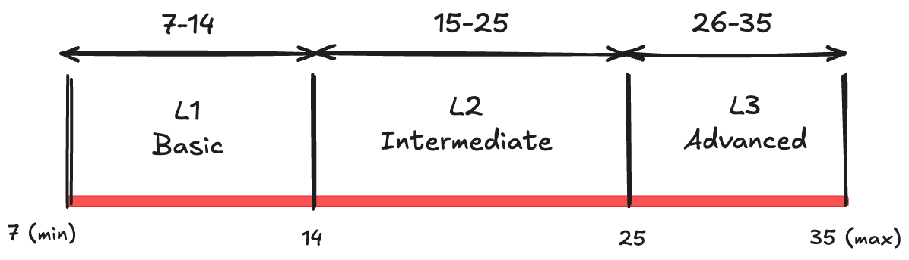

Overview¶
Karta Context Engine classifies AI evaluation tasks into three levels: L1 (Basic), L2 (Intermediate), and L3 (Advanced) . These classifications are determined using a Task Level Complexity Score (TLCS) , which is the sum of scores assigned to various complexity parameters. Each parameter is rated on a scale from 1 to 5 , and the final TLCS determines the classification of the task.
Task Complexity Parameters¶
Each task is assessed based on the following parameters:
Tool Use Multiplicity
Measures how many different tools or APIs the AI agent must interact with.
1 (Low): Single tool, simple interactions.
5 (High): Multiple tools requiring coordination and cross-referencing.
Customer Proficiency
Represents the expertise level of the end user.
1 (Low): Expert users with clear, well-formed queries.
5 (High): Novice users with vague or incomplete input.
Sub-task Count
Evaluates how many distinct steps are needed to complete a task.
1 (Low): Single-step execution.
5 (High): Multi-step processes with dependencies.
Cost of Failure
Assesses the impact of an incorrect response.
1 (Low): Minimal consequence (e.g., minor inconvenience).
5 (High): Severe consequences (e.g., financial loss, compliance issues).
Conversation Length Potential
Measures how long an interaction can extend.
1 (Low): Single-turn interactions.
5 (High): Extended multi-turn dialogues requiring memory.
Domain Knowledge Richness
Evaluates how much specialized knowledge is required.
1 (Low): General knowledge, easily retrievable.
5 (High): Deep, domain-specific knowledge.
Scope for Alternate Closure
Assesses whether the task has multiple valid solutions.
1 (Low): One clear solution.
5 (High): Many valid approaches and possible outcomes.
Task Classification Based on TLCS¶

The Task Level Complexity Score (TLCS) is calculated as the sum of all the parameter scores. Based on the TLCS, tasks are classified into L1, L2, or L3:
Task Level |
TLCS Range |
Description |
|---|---|---|
L1 (Basic Tasks) |
7 - 14 |
Simple, structured tasks with minimal ambiguity and limited tool use. These tasks require basic reasoning, short interactions, and have a low cost of failure. |
L2 (Intermediate Tasks) |
15 - 25 |
Moderately complex tasks requiring multiple subtasks, some ambiguity handling, and interaction with multiple tools. Cost of failure is moderate, and conversations may be multi-turn. |
L3 (Advanced Tasks) |
26 - 35 |
Highly complex tasks demanding advanced reasoning, multi-tool integration, deep domain expertise, and extended interactions. Failure consequences can be severe, and tasks may have multiple valid resolutions. |
Summing Up¶
L1 tasks are simple and well-defined, often involving single-turn interactions and low-risk decision-making .
L2 tasks introduce multi-step reasoning , moderate ambiguity , and tool coordination .
L3 tasks require deep contextual understanding , multi-turn conversations , high-stakes decision-making , and extensive tool integration .
By utilizing this structured classification system, Karta Context Engine ensures that AI evaluation tasks are systematically categorized based on complexity, enabling more precise benchmarking and validation of AI agents.